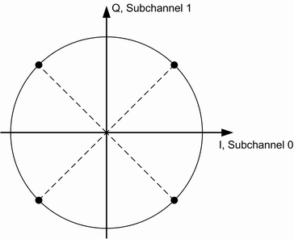
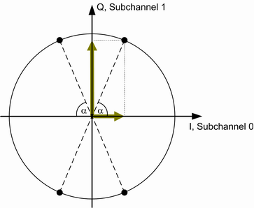

Legacy GSM channel organization allows only one mobile station (MS) to use a physical resource, i.e. a certain frequency channel and timeslot. With VAMOS, it is possible to serve two MS simultaneously on the same physical resource. Thus the voice channel capacity in the CS domain can be doubled. VAMOS stands for "voice services over adaptive multi-user channels on one slot" and is defined in 3GPP TS 45.001.
Each of the two VAMOS users is assigned a so-called VAMOS subchannel. The two subchannels are separated in uplink and downlink via training sequences. For this purpose, 3GPP TS 45.002 defines two sets of training sequence codes (TSC). One VAMOS user/subchannel gets a training sequence from TSC set 1, the other from TSC set 2. This method ensures that the two training sequences have a low cross-correlation. All mobiles must support TSC set 1, but only mobiles explicitly indicating support for VAMOS must also support TSC set 2.
In the uplink, the VAMOS subchannels are spatially orthogonal because of independent multipath propagation. The base station hardware requires antenna diversity to receive the two users in parallel.
In the downlink, a binary modulation scheme is used for each subchannel. The two subchannels are combined orthogonally by mapping them to the I and Q axis. It results in a QPSK modulation scheme, where each constellation point has a subchannel 0 component and a subchannel 1 component, as shown in the following figure.

In this figure, both subchannels use the same power level. VAMOS allows subchannel-specific power control, so that the two subchannels can use different power levels, e.g. when the two users are at different distances from the base station. The resulting modulation scheme is called adapted QPSK (AQPSK). The following figure shows an example where subchannel 1 mapped to the Q-axis uses a higher power level than subchannel 0 mapped to the I-axis. The subchannel power distribution is illustrated by the length of the colored vectors.

The power level of subchannel 0 relative to the power level of subchannel 1 is called subchannel power imbalance ratio (SCPIR). It is related to the angle α as follows:
SCPIR = 20 * log10(tan α) dB
For α = 45° the SCPIR equals 0 dB and the two power levels are equal.
AQPSK modulation is applied in the downlink if speech frames have to be transmitted on both subchannels simultaneously.
When there are no speech frames to be transmitted on one of the two subchannels, DTX is active for this subchannel. In that case, most TDMA frames are not used at all by the inactive subchannel. In these TDMA frames, GMSK modulation is applied for the active second subchannel.
However DTX means also that some TDMA frames are used by the inactive subchannel to transmit silence descriptor (SID) frames and the SACCH as specified in 3GPP TS 45.008. For these TDMA frames, AQPSK modulation is applied.
The "GSM Signaling" application can establish a CS VAMOS call for one mobile station. The second VAMOS user is only virtually present, i.e. there is only one DUT at a time.
You can set the SCPIR and configure which VAMOS subchannel, TSC set and TSC are used for the DUT. For the virtual second VAMOS user, the other subchannel is used and you can configure the TSC set and TSC. The 3GPP standard specifies two different support levels for VAMOS. VAMOS II mobiles must fulfill additional performance requirements and use a modified mapping of logical channels onto the physical channel. The R&S CMW supports both support levels.
- "Single user": There is no second VAMOS user at all. The downlink signal contains speech frames and signaling data for the DUT only. GMSK modulation is used.
The main difference to disabled VAMOS is that the VAMOS-specific training sequences can be applied (TSC set 2). - "Two users, both active": The downlink signal contains speech frames and signaling data for both users. AQPSK modulation is applied.
For the virtual user PRBS 2E9-1 is sent as data and no channel coding is applied.
For the subchannel used by the DUT, the same data source (e.g. echo) as without VAMOS is selected. This setting applies to all profiles. - "Two users, only one active": The downlink signal contains speech frames for the DUT only. For the virtual user DTX is transmitted. Depending on the TDMA frame number either GMSK modulation (virtual user transmits nothing) or AQPSK modulation (virtual user transmits SID or SACCH) is applied.
For configuration of VAMOS, see "Circuit Switched General Connection Parameters".